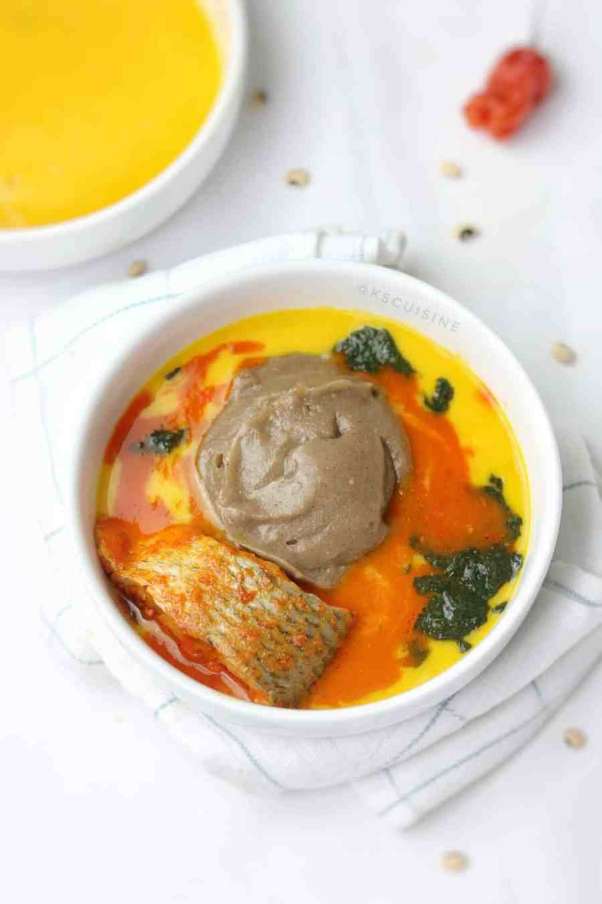

Amala: Typical Nigerian Meal
What it looks like !

You can make it now !
Ingredients
2 cups Yam flour- Sifted (Standard Measured)
1 cup (250ml) hot water (reserved)
Instructions
Boil water in electric kettle and measure 4 cups into a pot.
Cover the water and let it boil till it starts making bubbles like in the picture below.
Lower the heat to a bare minimum and add the yam flour into the water all at once then stir/turn with wooden spoon or spatula (omorogun) till it comes together but it won't be smooth at this stage. This process takes about a minute.
Add the reserved 1 cup of water to the Amala using the wooden spoon to create well in the middle and sides (Check picture below) and leave the water to steam the amala for 1-2 minutes.
Now stir the amala for 1-2 minutes till smooth. After this time some put it down and turn. If you are making large quantity you might find this helpful but with this quantity it's not necessary really but if you find it easier bring it down and turn.
Enjoy with your local soup of interest !!!
You think this is not right? check it out here